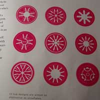
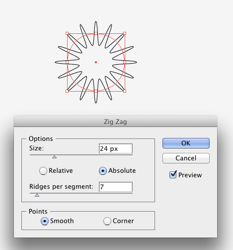
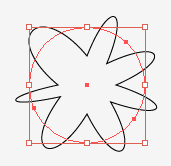
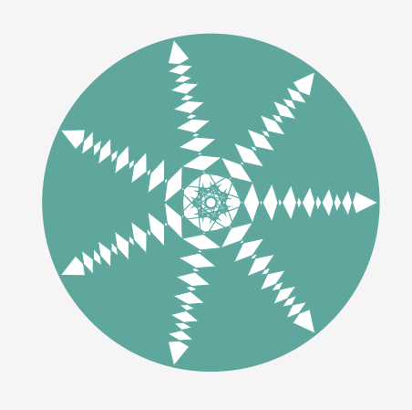
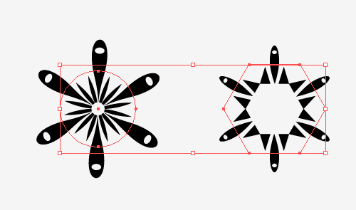
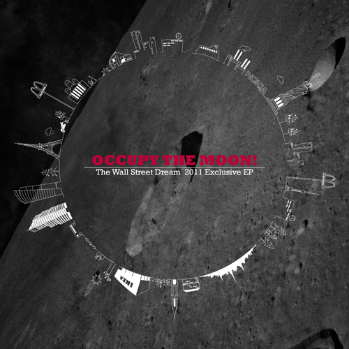

Design. Create. Play.
(cc)2011 Shanfan Huang

Disclaimer: This webpage is not tested in IE.
Rotary Patterns
It all started from the time I took a photo of this nice CD holder design on a magazine page many years ago. Little did I know how far it would take me from simply admiring it, redrawing it, all the way to a journey of discovery and enlightment.
In this tutorial I'll share some of my tricks to create variations of rotary patterns in Adobe Illustrator.
1. Distort & Transform Effect
Sometimes you might want to create some quick and sweet floral shapes for decoration. Here's an absolute slacker solution:
> Draw a circle.
> Go to Menu Effect > Distort & Transform > Pucker & Bloat... and play with the parameters.
> Now try some other effects under Distort & Transform menu, for instance this Zig Zag effect.
> Or apply two different effects on the same base circle.
> Remember to always try overlaping several floral shapes, and tweak their sizes and propotions to add your personal touch!
Note that by default the circle you created with the Circle tool in Illustrator always came with four points, and those four points are the ones to make the distortion effects happen. Try adding some random anchor points on the circle by the Pen tool to get asymmetrical shapes.
The questions is, what if you want to create a symmetrical pentagram or heptagram sort of floral shape? If you've read my other tutorial of installing and using scripts in Adobe Illustrator, Mr.Hiroyuki Sato has already solved the problem. Run his script "Circle" and it will create a perfectly devided circle by any number of anchor points. The shape below is created from a seven-point circle and with two effects applied.
2. Pattern Strokes
The second method requires some basic drawing - but it can be very basic that you don't even need to know how to draw.
> So first, draw something basic and define it as a new Pattern Brush.
> Then apply it to a circle or a polygon. Adjust the brush options.
While this method might look basic, it can actually bring about very interesting results. Guess what?
* The background image is originally posted by my Tumblr crush Crookedindifference. He's posted loads of awesome astronomic pictures!
Hope you enjoyed this very simple and quick tutorial! Questions, requests and feedback can be posted in the up-right Diqus box. Thanks for reading!